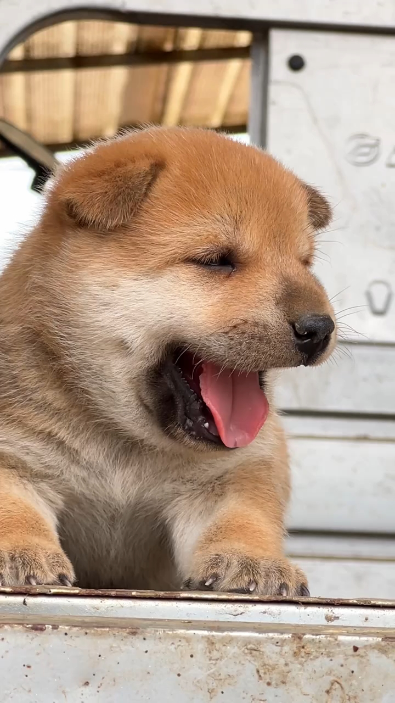
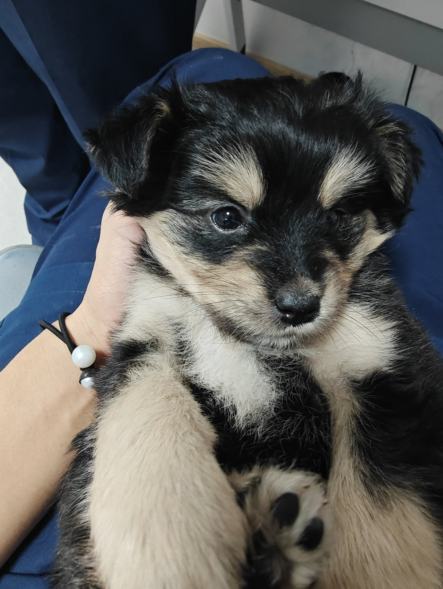

我们的叙事
中华田园犬是中国本土犬种，象征农村生活和忠诚精神。在meme币世界，中华田园犬是中国人的Doge，也是老祖宗严选，是时候支持自己的“土狗”了！这不是功能币，而是文化自信的表达。



中华田园犬，就是中国本土世代繁衍、自然筛选出来的狗狗的统称，它不是某一个特定的品种，而是一个庞大的“家族”。根据它们在不同地域长期适应后形成的某些特点，人们会通俗地叫它们：大黄狗、小黑狗、小白狗、四眼狗、黠灵、练庸、骁狼，它们忠诚、守护、朴实
中华田园犬是中国本土犬种，象征农村生活和忠诚精神。在meme币世界，中华田园犬是中国人的Doge，也是老祖宗严选，是时候支持自己的“土狗”了！这不是功能币，而是文化自信的表达。
X (Twitter): 中华田园犬社区
分享你的土狗故事，一起推向月球！